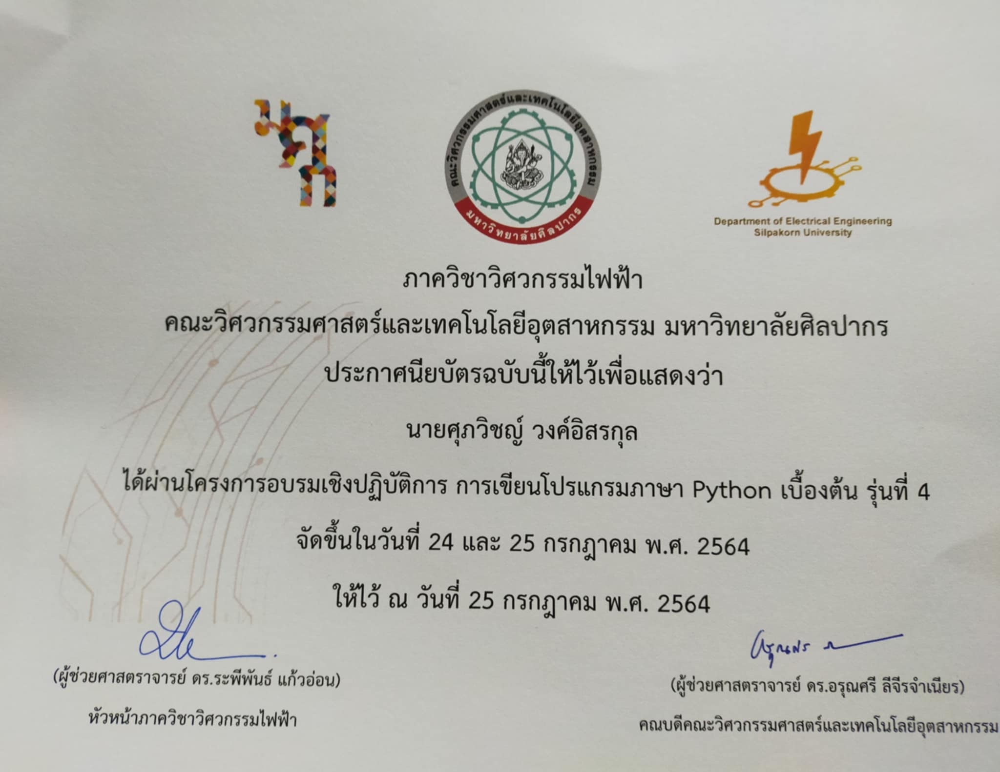
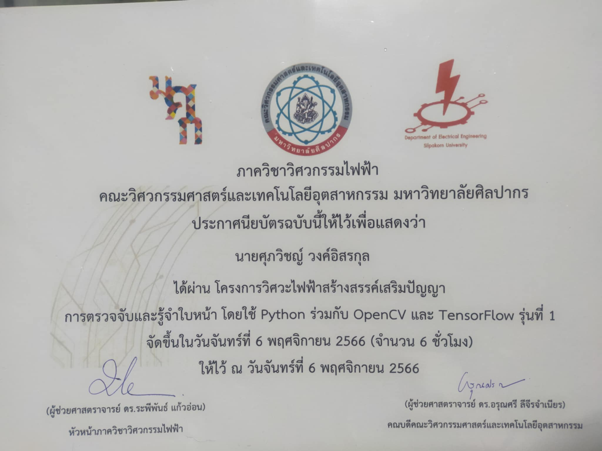
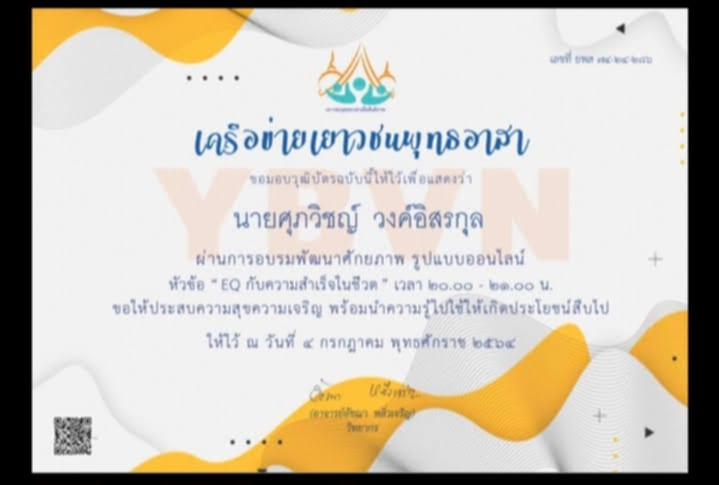

-ประวัติการศึกษา-
2552-2558 ประถมศึกษา : โรงเรียนวัดดอนไก่เตี้ย จ.เพชรบุรี (เกรดเฉลี่ย 3.98)

2558-2564 มัธยมศึกษา : โรงเรียนพรหมานุสรณ์ จ.เพชรบุรี (เกรดเฉลี่ย 3.05)

2564-ปัจจุบัน มหาวิทยาลัยศิลปากร เขตพระราชวังสนามจันทร์ จ.นครปฐม (เกรดเฉลี่ย 2.78)
-ประวัติการฝึกงาน-
การฝึกงานกับสถานประกอบการในช่วงภาคฤดูร้อนที่บริษัทโทรคมนาคมแห่งชาติ จำกัด(มหาชน) ตั้งแต่วันที่ 22 เมษายน 2567 ถึง 21 มิถุนายน 2567
-ประวัติการอบรม-
การเขียนโปรแกรมภาษา Python เบื้องต้น รุ่นที่4
การตรวจจับและรู้จำใบหน้าโดยใช้ Python ร่วมกับ OpenCV และ TensorFlow รุ่นที่1
การ Configuration อุปกรณ์ในระบบเครือข่ายเพื่อการทำงาน รุ่นที่5
การใช้งาน PLC ร่วมกับ HMI สำหรับระบบอัตโนมัติในอุตสาหกรรม รุ่นที่1
การใช้โปรแกรมจำลองการทำงาน SPICE ในการออกแบบวงจรไฟฟ้าและอิเล็กทรอนิกส์สำหรับงานระบบอัจฉริยะและ IOT
การพัฒนาโปรแกรมด้วย Python เบื่องต้น รุ่นที่2
การสร้าง Function และ Class ในภาษา Python รุ่นที่4
การพัฒนาระบบ IOT โดยใช้ ESP32 และ LINEBOT รุ่นที่2
EQ กับความสำเร็จในชีวิต
